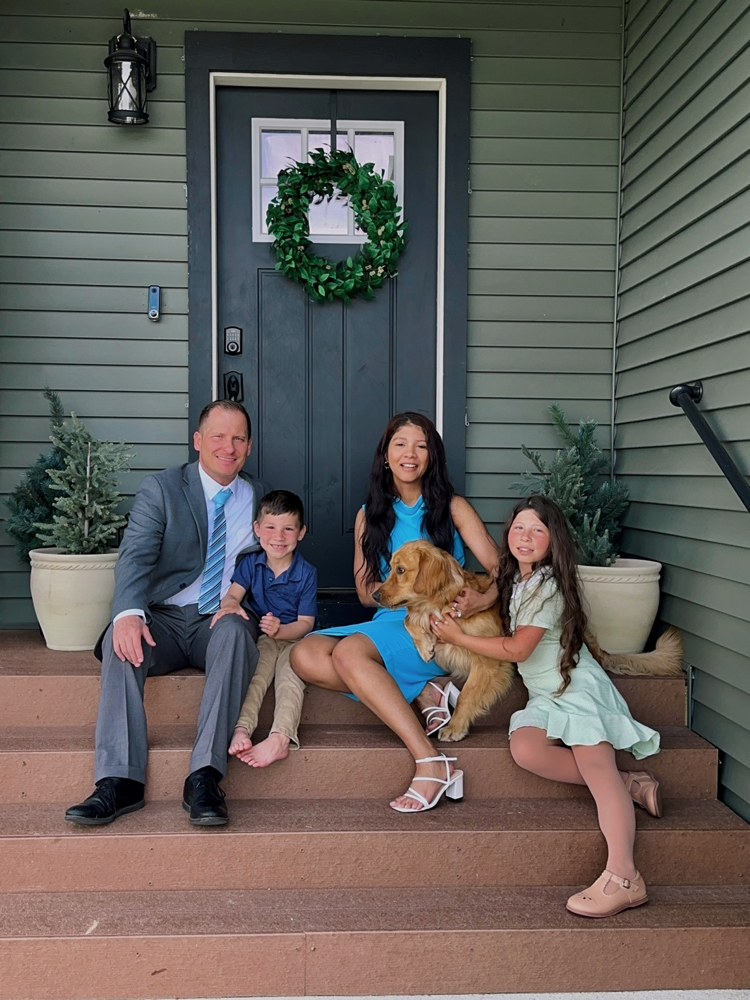

Welcome to My World
I’m originally from Brazil and now living in North Dakota with my family. I believe in hard work, self-growth, and living life with passion and purpose.
About Me
I was born and raised in Brazil and carry my culture with pride. From food to music to the language I love—it all shapes who I am today. I enjoy early morning workouts, quiet moments, and cooking delicious Brazilian meals. I believe in consistency, kindness, and staying grounded in faith.
- 💪 Weightlifting and staying healthy
- 🎵 Music playlists and relaxing walks
- 🍞 Pão de queijo and homemade meals
- 💖 Faith, family, and intentional living
“Rooted in faith. Growing with purpose.”
Music is part of my everyday life, and there's one song from Brazil that always lifts my spirit and reminds me of home. Listen to my favorite Brazilian song 🎧
Did You Know?
I moved to the U.S. without knowing any English. I learned the language through daily effort, and now I’m building a life I’m proud of—one step at a time.
My Life in Pictures
My Roots
I’m proud of where I come from. Brazil shaped who I am.
Family is Everything
This is my biggest joy—my husband, our two amazing kids, and our sweet Golden Retriever.
A Piece of Home
This is Salvador, Bahia—a place that holds my heart.